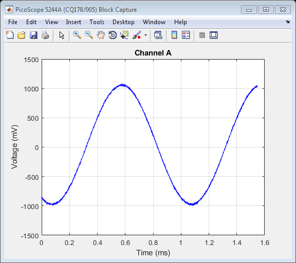
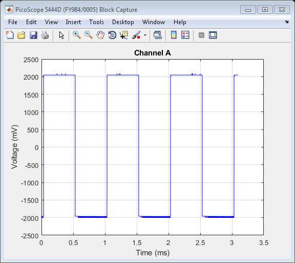

PicoScope 5000 Series (A API) Instrument Driver Oscilloscope Block Data Capture With Two Oscilloscopes Example
This is an example of an instrument control session using a device object. The instrument control session comprises all the steps you are likely to take when communicating with your instrument.
These steps are:
- Create a device object
- Connect to the instrument
- Configure properties
- Invoke functions
- Disconnect from the instrument
To run the instrument control session, type the name of the file, PS5000A_ID_Block_2_Scope_Example, at the MATLAB command prompt.
The file, PS5000A_ID_BLOCK_2_SCOPE_EXAMPLE.M must be on your MATLAB PATH. For additional information on setting your MATLAB PATH, type 'help addpath' at the MATLAB command prompt.
Example: PS5000A_ID_Block_2_Scope_Example;
Description: Demonstrates how to call functions in order to capture a block of data from two PicoScope 5000 Series Oscilloscopes using the underlying 'A' API library functions.
Copyright: © 2016-2018 Pico Technology Ltd. See LICENSE file for terms.
Contents
Suggested input test signals
This example was published using the following test signals:
- Scope 1:- Channel A: 4 Vpp, 1 kHz sine wave
- Scope 2:- Channel A: 4 Vpp, 1 kHz square wave
Clear command window and close any figures
clc;
close all;
Load configuration information
PS5000aConfig;
Device connection
% Check if an Instrument session using the device object |ps5000aDeviceObj| % is still open, and if so, disconnect if the User chooses 'Yes' when prompted. if (exist('ps5000aDeviceObj1', 'var') && ps5000aDeviceObj1.isvalid && strcmp(ps5000aDeviceObj1.status, 'open')) openDevice = questionDialog(['Device object ps5000aDeviceObj1 has an open connection. ' ... 'Do you wish to close the connection and continue?'], ... 'Device Object Connection Open'); if (openDevice == PicoConstants.TRUE) % Close connection to device. disconnect(ps5000aDeviceObj1); delete(ps5000aDeviceObj1); else % Exit script if User selects 'No'. return; end end if (exist('ps5000aDeviceObj2', 'var') && ps5000aDeviceObj2.isvalid && strcmp(ps5000aDeviceObj2.status, 'open')) openDevice = questionDialog(['Device object ps5000aDeviceObj2 has an open connection. ' ... 'Do you wish to close the connection and continue?'], ... 'Device Object Connection Open'); if (openDevice == PicoConstants.TRUE) % Close connection to device. disconnect(ps5000aDeviceObj2); delete(ps5000aDeviceObj2); else % Exit script if User selects 'No'. return; end end % Create a device object - provide the serial number as a second argument if required. ps5000aDeviceObj1 = icdevice('picotech_ps5000a_generic.mdd', ''); ps5000aDeviceObj2 = icdevice('picotech_ps5000a_generic.mdd', ''); % Connect device object to hardware. connect(ps5000aDeviceObj1); connect(ps5000aDeviceObj2);
Copyright © 2013-2018 Pico Technology Ltd. All rights reserved.
PicoScope 5000 Series (A API) MATLAB Instrument Driver
Number of units found: 2
Serial number(s): CQ178/005,FY984/0005
Copyright © 2013-2018 Pico Technology Ltd. All rights reserved.
PicoScope 5000 Series (A API) MATLAB Instrument Driver
Number of units found: 2
Serial number(s): CQ178/005,FY984/0005
Opening PicoScope 5000 Series (A API) device...
Instrument Device Object Using Driver : picotech_ps5000a_generic.mdd
Instrument Information
Type: Oscilloscope
Manufacturer: Pico Technology Ltd.
Model: PicoScope 5000A, 5000B and 5000D Series
Driver Information
DriverType: MATLAB generic
DriverName: picotech_ps5000a_generic.mdd
DriverVersion: 2.2.14.38
Communication State
Status: open
Default Channel Setup:-
-----------------------
Channel A:-
Enabled: True
Coupling: DC
Range: 5 V
Analog offset: 0.0 V
Channel B:-
Enabled: True
Coupling: DC
Range: 5 V
Analog offset: 0.0 V
Turning off Equivalent Time Sampling...
Equivalent Time Sampling turned off.
Turning off trigger...
Trigger turned off.
Default Block mode parameters:-
Timebase index : 65
Time Interval: 504 ns
Number of pre-trigger samples: 0
Number of post-trigger samples: 10000
Total number of samples: 10000
Default Streaming mode parameters:-
Streaming interval: 1.00e-06 s
Streaming auto stop: 1
Default Signal generator parameters:-
Start frequency: 1000 Hz
Stop frequency: 1000 Hz
Connected to PicoScope 5000 Series (A API) device:-
Instrument Model: 5244A
Batch/Serial Number: CQ178/005
USB Version: 2.0
Analog Channels: 2
Resolution: 8 bits
Bandwidth: 200 MHz
Buffer Memory: 256 MS
Maximum Sampling Rate: 1 GS/s
Signal Generator Type: Function Generator
Opening PicoScope 5000 Series (A API) device...
Instrument Device Object Using Driver : picotech_ps5000a_generic.mdd
Instrument Information
Type: Oscilloscope
Manufacturer: Pico Technology Ltd.
Model: PicoScope 5000A, 5000B and 5000D Series
Driver Information
DriverType: MATLAB generic
DriverName: picotech_ps5000a_generic.mdd
DriverVersion: 2.2.14.38
Communication State
Status: open
Default Channel Setup:-
-----------------------
Channel A:-
Enabled: True
Coupling: DC
Range: 5 V
Analog offset: 0.0 V
Channel B:-
Enabled: True
Coupling: DC
Range: 5 V
Analog offset: 0.0 V
Channel C:-
Enabled: True
Coupling: DC
Range: 5 V
Analog offset: 0.0 V
Channel D:-
Enabled: True
Coupling: DC
Range: 5 V
Analog offset: 0.0 V
Turning off Equivalent Time Sampling...
Equivalent Time Sampling turned off.
Turning off trigger...
Trigger turned off.
Default Block mode parameters:-
Timebase index : 65
Time Interval: 504 ns
Number of pre-trigger samples: 0
Number of post-trigger samples: 10000
Total number of samples: 10000
Default Streaming mode parameters:-
Streaming interval: 1.00e-06 s
Streaming auto stop: 1
Default Signal generator parameters:-
Start frequency: 1000 Hz
Stop frequency: 1000 Hz
Connected to PicoScope 5000 Series (A API) device:-
Instrument Model: 5444D
Batch/Serial Number: FY984/0005
USB Version: 3.0
Analog Channels: 4
Resolution: 8 bits
Bandwidth: 200 MHz
Buffer Memory: 512 MS
Maximum Sampling Rate: 1 GS/s
Signal Generator Type: Arbitrary Waveform Generator
5 V Power Supply connected: True
Set channels
Default driver settings used - use the ps5000aSetChannel() function to turn channels on or off and set voltage ranges, coupling, as well as analogue offset.
Set device resolution
% Max. resolution with 2 channels enabled is 15 bits. [status1.setResolution, scope1.resolution] = invoke(ps5000aDeviceObj1, 'ps5000aSetDeviceResolution', 15); [status2.setResolution2, scope2.resolution] = invoke(ps5000aDeviceObj2, 'ps5000aSetDeviceResolution', 8);
ps5000aSetDeviceResolution: Device resolution set to 15 bits. ps5000aSetDeviceResolution: Device resolution set to 8 bits.
GET TIMEBASE
Use the ps5000aGetTimebase2() function to query the driver as to the suitability of using a particular timebase index and the maximum number of samples available in the segment selected, then set the timebase property if required.
To use the fastest sampling interval possible, enable one analog channel and turn off all other channels.
Use a while loop to query the function until the status indicates that a valid timebase index has been selected. In this example, the timebase index of 65 is valid.
% Initial call to ps5000aGetTimebase2() with parameters: % % timebase : 65 % segment index : 0 scope1.timebaseIndex = 65; status1.getTimebase = PicoStatus.PICO_INVALID_TIMEBASE; while (status1.getTimebase == PicoStatus.PICO_INVALID_TIMEBASE) [status1.getTimebase, scope1.timeIntervalNanoSeconds, scope1.maxSamples] = invoke(ps5000aDeviceObj1, 'ps5000aGetTimebase', scope1.timebaseIndex, 0); if (status1.getTimebase == PicoStatus.PICO_OK) break; else scope1.timebaseIndex = scope1.timebaseIndex + 1; end end set(ps5000aDeviceObj1, 'timebase', scope1.timebaseIndex); % Repeat for second device scope2.timebaseIndex = 65; status2.getTimebase = PicoStatus.PICO_INVALID_TIMEBASE; while (status2.getTimebase == PicoStatus.PICO_INVALID_TIMEBASE) [status2.getTimebase, scope2.timeIntervalNanoSeconds, scope2.maxSamples] = invoke(ps5000aDeviceObj2, 'ps5000aGetTimebase', scope2.timebaseIndex, 0); if (status2.getTimebase == PicoStatus.PICO_OK) break; else scope2.timebaseIndex = scope2.timebaseIndex + 1; end end set(ps5000aDeviceObj2, 'timebase', scope2.timebaseIndex);
Set simple trigger
Set a trigger on channel A on both oscilloscopes, with an auto timeout - the default value for delay is used.
% Trigger properties and functions are located in the Instrument % Driver's Trigger group. triggerGroupObj1 = get(ps5000aDeviceObj1, 'Trigger'); triggerGroupObj1 = triggerGroupObj1(1); triggerGroupObj2 = get(ps5000aDeviceObj2, 'Trigger'); triggerGroupObj2 = triggerGroupObj2(1); % Set the |autoTriggerMs| property in order to automatically trigger the % oscilloscope after 2 seconds if a trigger event has not occurred. Set to 0 % to wait indefinitely for a trigger event. set(triggerGroupObj1, 'autoTriggerMs', 2000); set(triggerGroupObj2, 'autoTriggerMs', 2000); % Channel : 0 (ps5000aEnuminfo.enPS5000AChannel.PS5000A_CHANNEL_A) % Threshold : 1000 mV on device 1, 500 mV on device 2 % Direction : 2 (ps5000aEnuminfo.enPS5000AThresholdDirection.PS5000A_RISING) [status1.setSimpleTrigger] = invoke(triggerGroupObj1, 'setSimpleTrigger', 0, 1000, 2); [status2.setSimpleTrigger] = invoke(triggerGroupObj2, 'setSimpleTrigger', 0, 500, 2);
Set block parameters and capture data
Capture a block of data and retrieve data values for all enabled analog channels.
% Block data acquisition properties and functions are located in the % Instrument Driver's Block group. blockGroupObj1 = get(ps5000aDeviceObj1, 'Block'); blockGroupObj1 = blockGroupObj1(1); blockGroupObj2 = get(ps5000aDeviceObj2, 'Block'); blockGroupObj2 = blockGroupObj2(1); % Set pre-trigger and post-trigger samples. set(ps5000aDeviceObj1, 'numPreTriggerSamples', 1024); set(ps5000aDeviceObj1, 'numPostTriggerSamples', 2048); set(ps5000aDeviceObj2, 'numPreTriggerSamples', 2048); set(ps5000aDeviceObj2, 'numPostTriggerSamples', 4096); % Start the devices collecting data % Capture a block of data: % % segment index: 0 status1.ps5000aRunBlock = invoke(blockGroupObj1, 'ps5000aRunBlock', 0); status2.ps5000aRunBlock = invoke(blockGroupObj2, 'ps5000aRunBlock', 0); % Poll the device driver to see if data is available scope1.ready = PicoConstants.FALSE; scope2.ready = PicoConstants.FALSE; while (scope1.ready == PicoConstants.FALSE || scope2.ready == PicoConstants.FALSE) [status1.ready, scope1.ready] = invoke(blockGroupObj1, 'ps5000aIsReady'); [status2.ready, scope2.ready] = invoke(blockGroupObj2, 'ps5000aIsReady'); pause(0.01); end % Retrieve data values: startIndex = 0; segmentIndex = 0; downsamplingRatio = 1; downsamplingRatioMode = ps5000aEnuminfo.enPS5000ARatioMode.PS5000A_RATIO_MODE_NONE; [scope1.numSamples, scope1.overflow, scope1.chA, scope1.chB, scope1.chC, scope1.chD] = invoke(blockGroupObj1, 'getBlockData', startIndex, segmentIndex, ... downsamplingRatio, downsamplingRatioMode); [scope2.numSamples, scope2.overflow, scope2.chA, scope2.chB, scope2.chC, scope2.chD] = invoke(blockGroupObj2, 'getBlockData', startIndex, segmentIndex, ... downsamplingRatio, downsamplingRatioMode);
ps5000aRunBlock:- Collecting block of data: Timebase: 65 Pre-trigger samples: 1024 Post-trigger samples: 2048 ps5000aRunBlock:- Collecting block of data: Timebase: 65 Pre-trigger samples: 2048 Post-trigger samples: 4096 getBlockData: Setting up data buffers... getBlockData: Retrieving data... getBlockData: Assigning analog data to array and converting to millivolts. getBlockData: Data succesfully retrieved. getBlockData: Setting up data buffers... getBlockData: Retrieving data... getBlockData: Assigning analog data to array and converting to millivolts. getBlockData: Data succesfully retrieved.
Process data
In this example the data values returned from the device are displayed in plots in a Figure.
scope1.figureName = ['PicoScope ', ps5000aDeviceObj1.InstrumentModel, ' (', get(ps5000aDeviceObj1, 'unitSerial'), ') Block Capture']; scope1.figure = figure('Name', scope1.figureName, ... 'NumberTitle','off'); % Calculate time (nanoseconds) and convert to milliseconds % Use |timeIntervalNanoseconds| output from the |ps5000aGetTimebase2()| % function or calculate it using the main Programmer's Guide. % Take into account the downsampling ratio used. scope1.timeNs = double(scope1.timeIntervalNanoSeconds) * downsamplingRatio * double(0:scope1.numSamples - 1); scope1.timeMs = scope1.timeNs / 1e6; % Channel A plot(scope1.timeMs, scope1.chA, 'b'); title('Channel A'); xlabel('Time (ms)'); ylabel('Voltage (mV)'); grid('on'); movegui(scope1.figure, 'west'); scope2.figureName = ['PicoScope ', ps5000aDeviceObj2.InstrumentModel, ' (', get(ps5000aDeviceObj2, 'unitSerial'), ') Block Capture']; scope2.figure = figure('Name', scope2.figureName, ... 'NumberTitle','off'); % Calculate time (nanoseconds) and convert to milliseconds % Use |timeIntervalNanoseconds| output from the |ps5000aGetTimebase2()| % function or calculate it using the main Programmer's Guide. % Take into account the downsampling ratio used. scope2.timeNs = double(scope2.timeIntervalNanoSeconds) * downsamplingRatio * double(0:scope2.numSamples - 1); scope2.timeMs = scope2.timeNs / 1e6; % Channel A plot(scope2.timeMs, scope2.chA, 'b'); title('Channel A'); xlabel('Time (ms)'); ylabel('Voltage (mV)'); grid('on'); movegui(scope2.figure, 'east'); 
Stop devices
[status1.stop] = invoke(ps5000aDeviceObj1, 'ps5000aStop'); [status2.stop] = invoke(ps5000aDeviceObj2, 'ps5000aStop');
Disconnect device
Disconnect device object from hardware.
disconnect(ps5000aDeviceObj1); delete(ps5000aDeviceObj1); disconnect(ps5000aDeviceObj2); delete(ps5000aDeviceObj2);
Connection to PicoScope 5244A with serial number CQ178/005 closed successfully. Other PicoScope 5000 Series (A API) devices are still connected - libraries will not be unloaded. Connection to PicoScope 5444D with serial number FY984/0005 closed successfully. Libraries unloaded successfully.